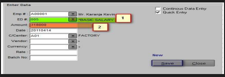

How to Add and Process Transactions
Follow these steps to add and process transactions:
-
Click on the button from the menu bar on the transactions window.
-
"Next, key in the 'ED Code and Amount'and click save.".
 -
Once the transactions have been added, click on the press button and check on the status column..
-
(P means processed data, N means New, UN means unprocesed, R means recurrent data)
-
On successful processing, the status(Sts)should be processed(P).